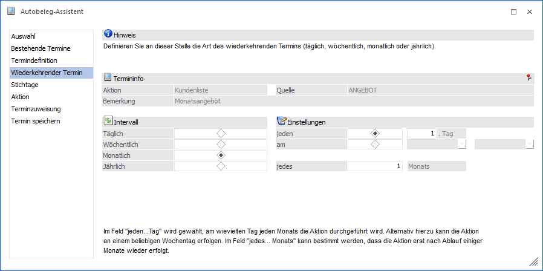
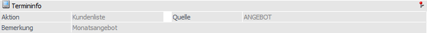
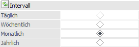
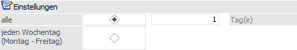
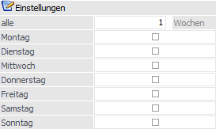
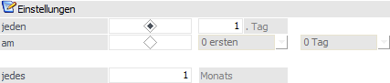
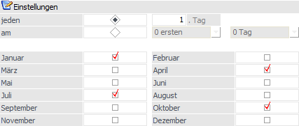

Autobeleg-Assistent -
Wiederkehrende Termine
Im Bereich der Wiederkehrenden Termine kann der Rhythmus
einer Aktion festgelegt werden.

Folgende Einstellungen und Information stehen in diesem
Bereich zur Verfügung:
Termininfo

An dieser Stelle wird der aktuell gewählte Termin
dargestellt. Alle weiteren Aktionen (z.B. Anwahl des Buttons "Start") und
Änderungen erfolgt für diesen Termin.
Intervall

Ø Intervall
Abhängig von der Eingabe im Bereich "Intervall" ändern sich
die Eingabefelder im Bereich "Einstellungen".
ü Täglich

Die Aktion wird entweder jeden
Wochentag durchgeführt, oder es wird im Feld "alle ... Tag(e)" der Rhythmus
erfasst. "alle 5 Tag(e)" bedeutet z.B., dass die Aktion an jedem 5. Tag
durchgeführt wird.
ü Wöchentlich

Bei der Einstellung "Wöchentlich"
kann gewählt werden, an welchem Wochentag die Aktion durchgeführt werden soll.
Eine Mehrfachauswahl ist möglich, es kann also bei der Einstellung "wöchentlich"
auch zu mehreren Aktionen pro Woche kommen.
Des Weiteren kann im Feld "alle
... Wochen" eingestellt werden, dass die Aktion nur nach Ablauf einer bestimmten
Wochenanzahl durchgeführt wird.
ü Monatlich

Nach der Einstellung "Monatlich"
kann im Feld "jeden ... Tag" gewählt werden, am wievielten jeden Monats die
Aktion durchgeführt werden soll.
Alternativ kann die Aktion an einem
beliebigen Wochentag des Monats erfolgen. Im Feld "jedes ... Monats" kann
bestimmt werden, dass die Aktion erst nach Ablauf einiger Monate erfolgt.
ü Jährlich

Nach der Anwahl des Typs "Jährlich"
kann gewählt werden, am wievielten eines jeden Monats die Aktion durchgeführt
werden soll.
Alternativ kann die Aktion an einem beliebigen Wochentag oder
-ende eines Monats erfolgen. Der gewünschte Monat kann eingegeben werden, eine
Mehrfachauswahl ist möglich.
Achtung
Falls ein im Monat ungültiger Tag in der Termindefinition
eingetragen ist (z.B. der 30. für den Februar), so wird das Monatsende
verwendet. Allerdings wird dann ab diesem Zeitpunkt auch für die nachfolgenden
Monate dieser Tag verwendet!
Beispiel
ü Jeden 30. Tag jeden 1. Monats,
Beginn am 1.1., Ende am 1.5.
à Es
werden folgende Termine erstellt: 31.1., 29.2., 29.3., 29.4.
ü Jeden 31. Tag jeden 1. Monats,
Beginn am 15.3., Ende am 1.6.
à
Es werden folgende Termine erstellt: 31.3., 30.4., 30.5.